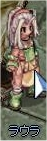

画像にリンクがはってあるものは、クリックすると別窓で大きめサイズが表示されます。
[ルダ]
所在地；フィゲル8時方向建物（hugel:52,94）内 |
[ジュリアン]
所在地；フィゲル8時方向建物（hugel:52,94）内 |
   |
[ラウラ]
所在地；フィゲル8時方向建物（hugel:52,94）内 |
|  |
[アレックス]
所在地；フィゲル8時方向建物（hugel:52,94）内 |
  |
[アッシュ]
所在地；フィゲル8時方向建物（hugel:52,94）内 |
   |
back
(c) Gravity Co., Ltd. & Lee MyoungJin(studio DTDS). All rights reserved.
(c) GungHo Online Entertainment, Inc. All Rights Reserved.
当コンテンツの再利用（再転載・配布など）は、禁止しています。